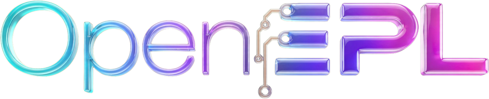
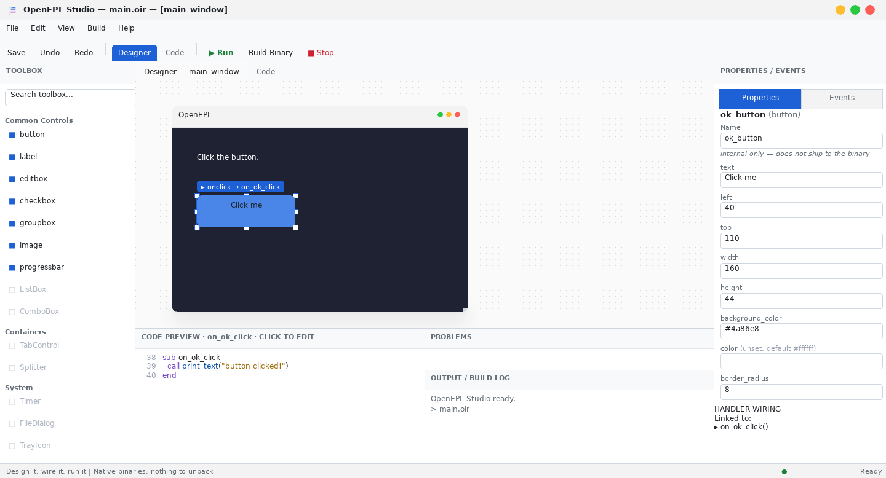
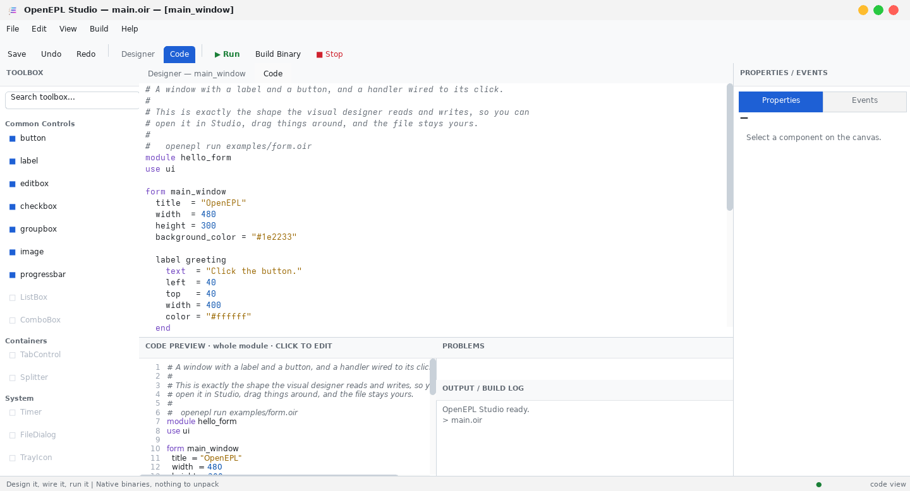

An open implementation of Easy Programming Language (易语言) — a RAD environment where you build desktop software by drawing it. Lay out a window, set properties, wire a button's click to a subroutine, and press Run: what comes out is an ordinary native binary you can hand to someone.

The designer and the source are the same file — drag a button and the code changes.
Four things, and they are the whole idea.
The form you draw and the file you edit are one thing. Drag a button and the source changes; edit the source and the canvas follows. There is no designer format that could drift from your code.
Your project is compiled and linked with the system linker, and the linker drops every command you never call. Nothing is unpacked at start-up and there is no interpreter inside.
Easy Programming Language showed that drawing an application and compiling it to a real executable is the right way to build desktop software. OpenEPL implements that model as open source, in English, on an inspectable toolchain — a fresh implementation, not a clone: it does not run existing EPL programs.
The same source builds as a console program, a windowed program, a shared library or a static library. A build option, not a rewrite.
One way to call things. No pointers, no manual memory management, no
ceremony. Assignment is a statement rather than an expression, so
if x = 5 compares — it cannot silently assign.
Whole numbers, doubles, booleans and text; arrays, bytes, records and
dictionaries; subroutines with parameters and return values. Every
position counts from 1, so 0 is free to mean not
found. A command that fails returns a sentinel and leaves the
reason in an error slot — there are no exceptions to catch.
13 bundled kits,
312 commands and
21 components — files, text, JSON,
HTTP, a timer, a grid — and use <name> is the whole
of asking for a kit.
# hello.oir module hello target console sub main call print_text("Hello from OpenEPL.") let answer: int = 6 * 7 call print_text("six times seven is " + int_to_text(answer)) end
Declare the target in the module, or override it for one build without touching the source. Libraries export their subroutines under their own names, so anything that can call C can link against them.
| Target | Produces |
|---|---|
console | a terminal program |
gui | a windowed program |
sharedlib | .so / .dll / .dylib |
staticlib | .a archive |
Syntax highlighting and live diagnostics in the IDE, backed by a language
server any editor can use — completion, signature help, hover,
go-to-definition and find-references in VS Code, Neovim, Helix and Zed.
A diagnostic underlines the name it is about and names the fix: the
use line to add, the name you probably meant, the handler
header to paste.

Linux on x86-64 only. A release build is hardened and stripped, not hidden — a native binary can always be disassembled. TLS is opt-in and client-side only. Memory is reclaimed when a program exits, not before. There is no debugger, and the toolbox still greys out a few controls that are not written yet.
What does work, end to end: design a form, wire an event, build it, run it, and ship the binary — and a console program, a web server or a library the same way — today.